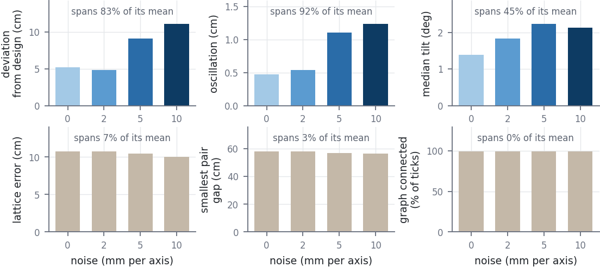
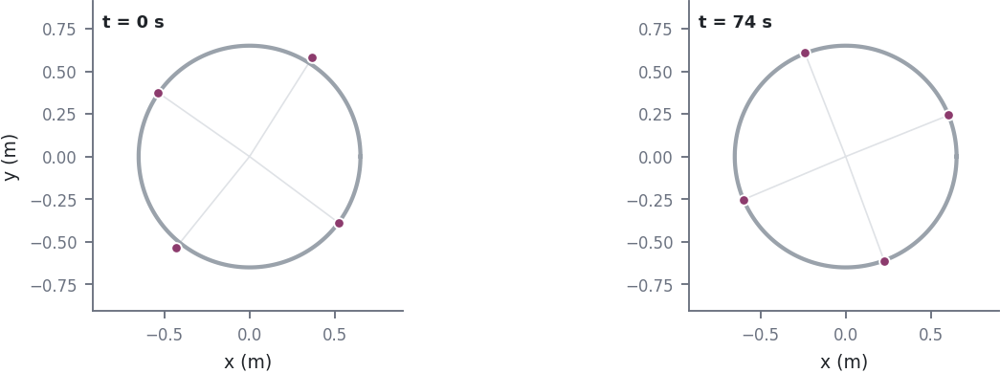
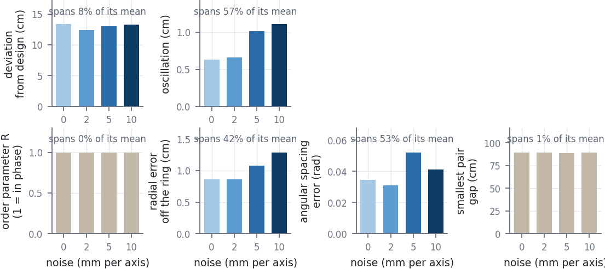
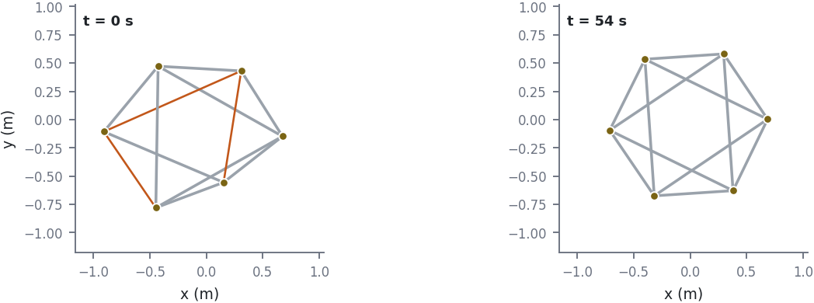
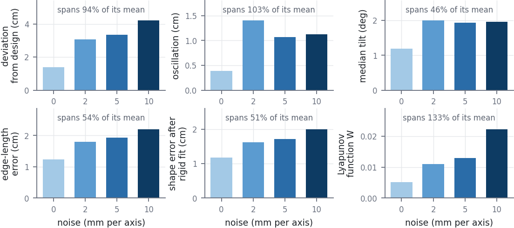
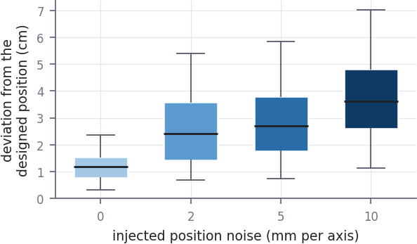

the shortlist that goes in the report, shown at the width it prints at — 3.5 in for a column, 6.5 in for full width. No figure carries a title: the caption is the title.
Fig. 1. Designed against flown position for the trochoidal law, over the first 20 s of each flight, at four of the eight gain rungs. Grey is the same configuration in the noiseless simulator, started from where the drones actually were when the algorithm engaged; colour is VICON. At k·τ 0.56 and 0.84 the aircraft sits on the designed pattern. At 1.12 a ripple appears on top of it and does not decay, and at 3.92 the pattern is barely visible beneath it. The loops in the left-hand panels have a period of about 1.1 s at every rung, set by the loop delay rather than by the gain.
Fig. 23.5 in · fig_noise_trochoidal_box.pdf · vector
Fig. 2. Deviation from the designed trochoidal pattern against injected position noise, at β = 2 where the gain ladder is quiet, so the exact-state assumption is probed on its own. Box is the middle half of the flight, whiskers the 5th to 95th percentile. Every other parameter is identical across the four flights.
Fig. 3. What the coverage law converged to, on the quiet rung (k·τ 0.34). Left is the moment the algorithm engaged, right is 77 s later; both panels show the region Q, the Voronoi partition built from the flown positions, each agent (dot) joined to its own cell’s centroid (cross), and the Gaussian density at one and two sigma. The law’s fixed points are exactly the configurations where every agent sits on its own centroid, so the length of those joining lines is the convergence being claimed. The partition is built with the same half-plane clip the controller uses, so the drawn cells are the cells the cost was scored on.
Fig. 4. The quantity the coverage result is stated in — the locational cost H — over the three gain settings, against the same configuration in the noiseless simulator. The density is a Gaussian hotspot orbiting once every 20.9 s, so H is a tracking cost rather than a settling one, and the slow undulation in both traces is one orbit of that hotspot. The first 5 s are cut: the fleet starts from its parked marks and that one-off fan-out is three times the size of everything after it. After the first 20 s the hardware median reads 0.147, 0.117 and 0.124 against 0.164, 0.122 and 0.112 in simulation — within 0.017 on every rung. At k·τ 1.01 the aircraft is visibly oscillating (next figure) and a fast ripple appears on H, but its median moves by 0.007. The metric the theorem is written in barely registers a ladder that changes how the drones fly by a factor of five.
Fig. 5. Designed against flown position for Voronoi coverage at three gain settings, 20 s from the middle of each flight. The label in each right panel is the median distance between the two lines over that window.
Fig. 66.5 in · fig_coverage_benchmarks.pdf · vector
Fig. 6. Coverage under injected position noise. Top row: how the aircraft flew. Deviation and oscillation are computed from the recorded position, which carries the injected noise, so each bar is shown against a sensor-only null — the control flight re-measured through that rung’s noise. Tilt comes from the motion-capture pose stream, which the injection never touches. Bottom row: the three quantities the coverage result is stated in. All three span a few percent of their own mean across a ladder that moves the aircraft by a factor of five.
Fig. 73.5 in · fig_noise_coverage_box.pdf · vector
Fig. 7. Deviation from the designed coverage configuration against injected position noise. Box is the middle half of the flight, whiskers the 5th to 95th percentile, line the median. Median deviation runs 3.5, 6.4, 5.8, 8.3 and 13.3 cm. Every parameter other than the noise level is identical across the five flights.
Fig. 8. What the flocking law converged to, on the quiet rung (k·τ 0.42). Left is the moment the algorithm engaged: the four agents sit on their parked marks, every pair further apart than the 0.84 m sense range, so no edge exists and there is no group. Right is 125 s later: a connected lattice at 0.59 m spacing that has also travelled to follow the moving γ-agent. Both panels are drawn at the same scale. The edges are not scored good or bad here, because the α-lattice does not settle at the nominal spacing d = 0.70 m — the sigma-norm bump puts its equilibrium at about 0.84 d = 0.59 m, which is what the flight reached.
Fig. 9. Lattice error — the RMS gap between every in-range pair and the nominal spacing — across the three time-rescalings, hardware against the same configuration in simulation. On the quiet rung the two agree to 0.1 mm (0.1083 m against 0.1084 m). The residual 10.8 cm is not a hardware error: the recorder scores against the nominal d = 0.70 m while the α-lattice equilibrium is at about 0.59 m, and the simulation carries the same offset. At k·τ 1.25 the trace is visibly noisier throughout and breaks away near the end of the flight.
Fig. 10. Designed against flown position for Olfati-Saber flocking at three time-rescalings, 20 s from the middle of each flight. The rescaling leaves the lattice and the path unchanged and moves only the rate at which the law acts, so k·τ is the only quantity that differs between rows.
Fig. 116.5 in · fig_flocking_benchmarks.pdf · vector

Fig. 11. Flocking under injected position noise. Top row: how the aircraft flew — deviation 5.2 → 11.1 cm, oscillation 0.47 → 1.24 cm, median tilt 1.4 → 2.1°. Bottom row: the properties the flocking result is stated in — cohesion, safety and connectivity. Lattice error spans 7% of its mean, the smallest pair gap 3%, and the graph is connected on 99.3% of ticks at every rung. The velocity-matching metric is left out: it reads the least-squares velocity, where the fit has already multiplied the injected position noise by about eleven, so its rise is the injection and not the flock.
Fig. 123.5 in · fig_noise_flocking_box.pdf · vector
Fig. 12. Deviation from the designed flocking lattice against injected position noise. Median deviation runs 5.1, 4.5, 8.2 and 9.1 cm. The control reads above the 2 mm rung; both of those conditions were flown twice and reproduce to within 0.3 cm, so the ordering is a property of the ladder rather than a bad flight.
Fig. 136.5 in · fig_kuramoto_converge.pdf · vector

Fig. 13. The Kuramoto ring on the quiet rung (k·τ 0.39), at engage and 74 s later. Unlike the other four laws the formation is also the starting condition — the drones take off onto marks that already lie on the 0.65 m ring — so what the hardware tests is whether the ring is maintained, not whether it is reached, and the transient is correspondingly small: the order parameter runs 0.9994 at engage to 1.0000 settled, the radial error off the ring 2.6 cm to 0.6 cm, and the angular spacing error 0.059 to 0.033 rad. Phase lock is therefore not evidence of much on this ladder — it was nearly perfect before the law did anything.
Fig. 14. The order parameter R, the quantity the Kuramoto result is stated in, across the damping ladder. R reads 1.0000, 0.9909 and 0.9962 settled, against 1.0000 in simulation on every rung — within 0.3% of the ideal across a ladder that puts the aircraft into 21 cm of sustained oscillation at 29° of bank with the acceleration clamp active on 80% of ticks. The excursion at the end of the middle panel is the end of the flight, not the law. A phase-only metric cannot see a position oscillation, which is the sharpest case of metric blindness in the set.
Fig. 15. Designed against flown position for the Kuramoto ring formation at three damping settings, 20 s from the middle of each flight. Only the own-velocity gain differs between rows; the ring the law asks for is identical. The smallest pair gap falls from 0.90 m to 0.63 m across these rungs and the angular spacing error from 0.033 to 0.53 rad — the ring deforms badly — while R stays within 0.3% of 1 throughout.
Fig. 166.5 in · fig_kuramoto_benchmarks.pdf · vector

Fig. 16. Kuramoto under injected position noise. Top row: how the aircraft flew. Tilt is absent because the Kuramoto recorder writes its own metric columns only and never the pose stream, so this law has no clean motion channel. Bottom row: the four properties the law promises. R is flat at 1.0000 across the whole ladder, while the radial error off the ring spans 42% of its mean and the angular spacing error 53%. Phase lock holds; the geometry it is supposed to produce does not.
Fig. 173.5 in · fig_noise_kuramoto_box.pdf · vector
Fig. 17. Deviation from the designed ring for the Kuramoto law against injected position noise. Median deviation runs 12.0, 12.3, 11.8 and 12.1 cm — flat across the whole ladder, against a baseline gap of 12 cm. Under the same lever the trochoidal and coverage ladders move by a factor of four to five.
Fig. 186.5 in · fig_distance_converge.pdf · vector

Fig. 18. What the distance-based formation converged to, on the quiet rung (k·τ 0.39). Left is the moment the algorithm engaged, right is 54 s later; the drawn graph is the octahedron’s twelve constraint edges, orange where an edge is more than 30% off its target length. Three edges start out of tolerance and the hexagon is visibly skewed; by 54 s every edge is within tolerance. The edge-length error falls from 8.9 cm to 0.6 cm and the Lyapunov function W from 0.128 to 0.001 over the same window. Both panels are drawn at the same scale.
Fig. 19. Edge-length error, the quantity the distance-formation result is stated in, across the damping ladder. At k·τ 0.39 the error settles at 0.6 cm against 0.1 cm in simulation; at 0.81 it holds at 10.7 cm, 27 times the simulated value, and at 1.20 at 10.0 cm, 17 times. Unlike coverage’s H and Kuramoto’s R, this metric is a direct function of the positions, so it registers the oscillation the aircraft is actually doing.
Fig. 20. Designed against flown position for the distance-based formation at three damping settings, 20 s from the middle of each flight. The law holds a six-agent octahedron by inter-agent distances alone, with one real aircraft. At k·τ 0.39 the drone sits on its station, 1 cm from where the law wanted it. At 0.81 it circles a 26 cm orbit around that station and at 1.20 a 40 cm one, at about 1.1 s per lap in both cases. Only the damping gain differs between rows; the commanded shape is identical.
Fig. 216.5 in · fig_distance_benchmarks.pdf · vector

Fig. 21. Distance-based formation under injected position noise. Top row: how the aircraft flew. Bottom row: the three quantities the formation result is stated in — the edge-length error the theorem bounds, the shape error after a best rigid fit, and the Lyapunov function the convergence proof is built on. Unlike coverage, whose published quantities stay within a few percent of their mean across the same lever, all three move with the noise: the edge error by 54% of its mean, the shape error by 51%, and W by 133%. A shape defined by distances is a direct function of the positions the noise corrupts, so its metric cannot be blind to it.
Fig. 223.5 in · fig_noise_distance_box.pdf · vector

Fig. 22. Deviation from the designed octahedron against injected position noise, flown at k·τ 0.39 where the gain ladder is quiet. Median deviation runs 1.2, 2.4, 2.7 and 3.6 cm.
Fig. 23. All five control laws under the same lever. Deviation from the designed trajectory is the only quantity every law records, so it is the only axis the five can share — each law’s own promise metric is in different units and measures a different property. Left, in centimetres: the baselines differ by a factor of nine, from 1.4 cm for the distance formation to 13.4 cm for Kuramoto, and that offset buries the slopes. Right, each law divided by its own 0 mm flight. Over 0 to 10 mm the trochoidal law rises 5.7×, the distance formation 3.0×, coverage 2.9× and flocking 2.1×, while Kuramoto ends at 0.99× — flat. Kuramoto’s flatness is not robustness: its 10 mm flight sits at 0.99 times its own sensor-only null, so the whole ladder is inside the gap the law already had. Coverage was the only law taken to 20 mm; the rungs are placed evenly rather than to scale. No null is drawn: the trochoidal ladder was flown before the null model existed, and a reference line present for four series and missing for the fifth would read as a difference between the laws rather than between the ladders.